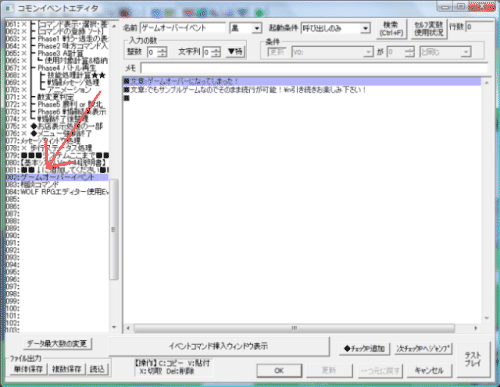
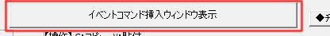
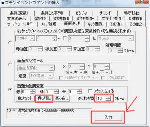
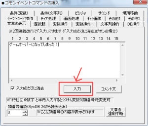
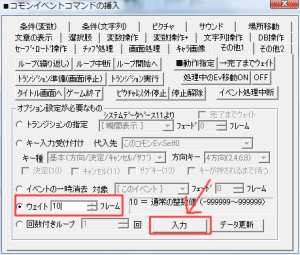
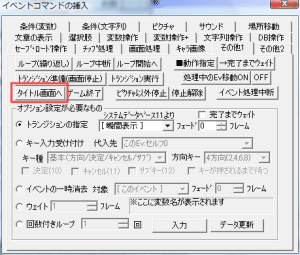
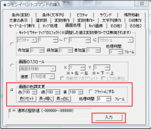
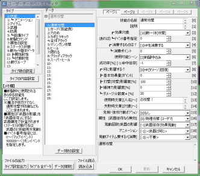
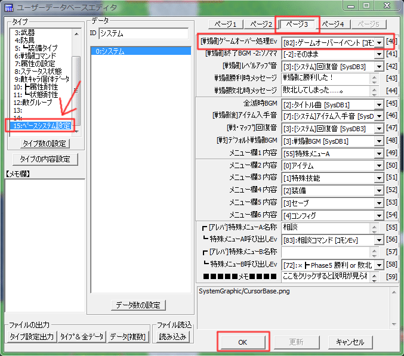

【目標】
戦闘中に味方全員のHPが０になると
『「ゲームオーバー」と表示されて画面が暗転し、タイトル画面に戻る』
処理を作ります。
| 【1】 『コモンイベントの設定』を開き、 コモン82を選択し、開きます。 |
 |
| 【2】 次に、コモンイベントエディタの下のほうにある 『イベントコマンド挿入ウィンドウを表示』をクリックします。 |
 |
| 【3】 『イベントコマンドの挿入』の 「画面処理」タブを選択し、画面の色調変更から、 「真っ黒に」を押し、処理時間を10フレームにして、入力を押します。 |
 |
| 【4】 最初からあった、文章を『BackSpace』キーで消去し 新たに『ゲームオーバーになってしまった！』と入力します。 新しいイベントを作ってみたいの【8】【9】参照 |
 |
| 【5】 画面の色調変更で10フレームかかるので、 その他1のタブから「ウェイト」10フレーム入力します。 |
 |
| 【6】 タイトルに戻る処理としてその他1から、 『タイトル画面へ』を押します。 |
 |
| 【7】 『画面処理』から、画面の色調変更で 「色リセット」を押し、入力します。 |
 |
| 【8】 次に、『ユーザーデータベースエディタ』を開きます。 |  |
| 【9】 「15:ﾍﾞｰｽｼｽﾃﾑ設定」を開き、「ページ3」を押します。 [戦闘]ｹﾞｰﾑｵｰﾊﾞｰ処理Evがコモン82になってるのを確認して、 「OK」を押します。 ゲームオーバー処理の作り方は以上です。お疲れさまでした。 |
 |
＜執筆者：ウディタ公式ガイド執筆コミュ。＞